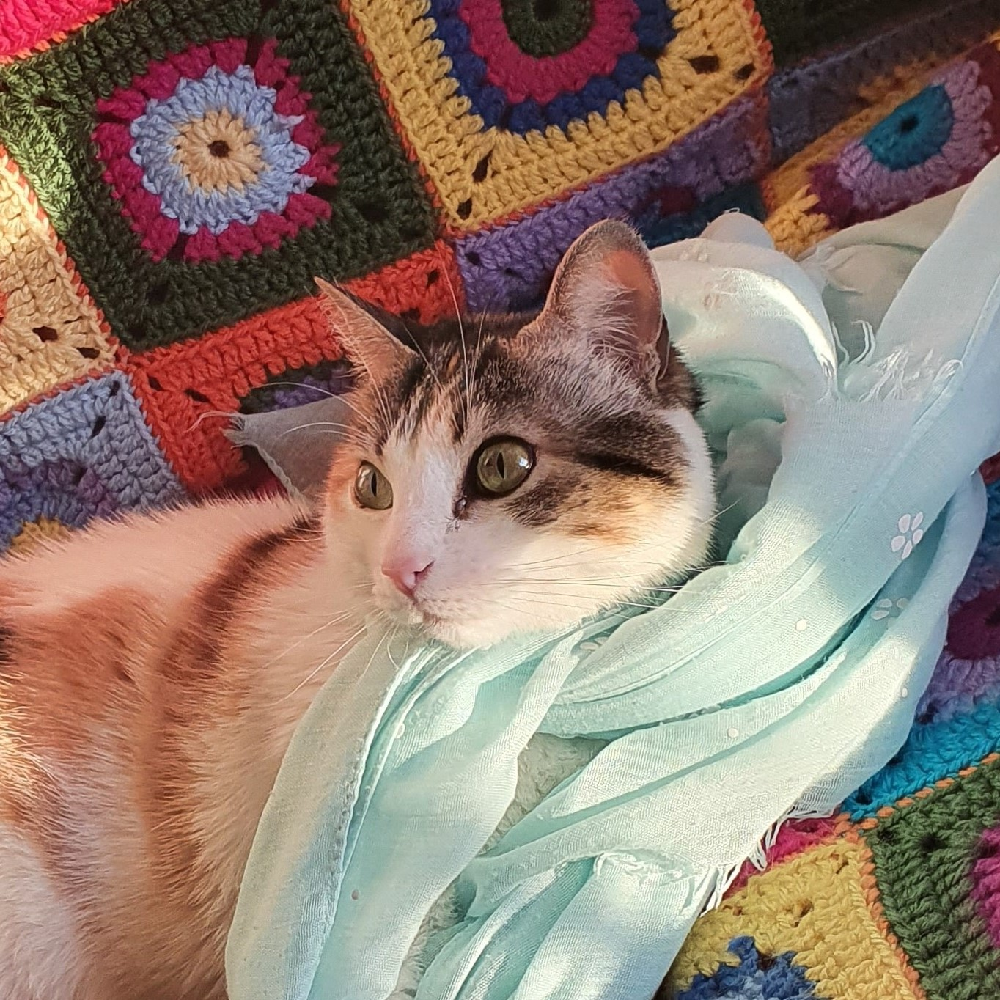

Marta Molina Aguilera
Multi-platform Junior developer
My name is Marta, I am a a Multiplatform Apps Development student (CertHE).
I descrive my self as a curious being, always targeting new stuff to learn. In my middle twenties I had to reinvent my self. I went from dressmaker to software developer.
I am a devoted cat mom, therefore I'm looking for my first job as developer. I would like to have a good career in order to provide a nice life standars to my kittens.